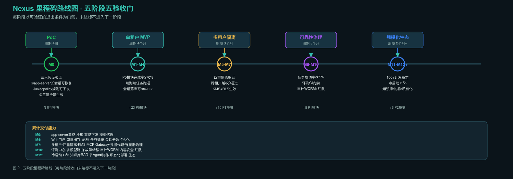
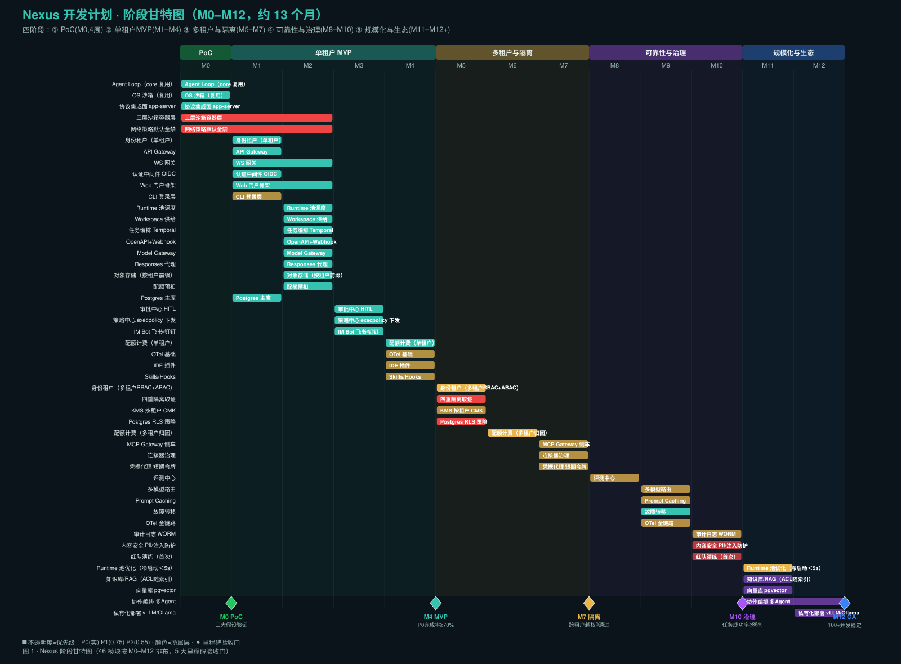
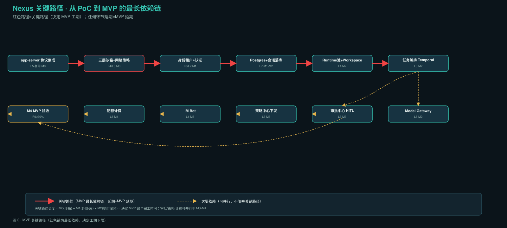

0. 概览
5
阶段
13
里程碑 M0-M12+
70
可执行任务
90.5
总工时(pw)
~13
总周期(月)
8-12
核心团队(人)
核心约束：不改 Harness 内核 · 主集成面=app-server JSON-RPC · 控制面/执行面物理分离 · 会话真相在云端 · 默认最小权限
1. 五阶段路线与验收门

图 · 五阶段里程碑路线（每阶段验收门未达标不进入下一阶段）
| 阶段 | 里程碑 | 周期 | 目标 | 验收门 |
|---|---|---|---|---|
| ① PoC | M0 | 4 周 | 验证三大假设 | app-server 长会话可恢复；execpolicy 可下发；三层沙箱生效 |
| ② 单租户 MVP | M1-M4 | 4 月 | P0 端到端跑通 | P0 完成率≥70%；会话可 resume |
| ③ 多租户隔离 | M5-M7 | 3 月 | 安全隔离 | 四重隔离取证；越权演练 0 通过 |
| ④ 可靠性治理 | M8-M10 | 3 月 | 稳定可观测合规 | 任务成功率≥85%；CI 门禁；审计 WORM |
| ⑤ 规模化生态 | M11-M12+ | 2 月+ | 规模/知识库/协作/私有化 | 100+并发；冷启动＜5s |
2. 阶段甘特图

图 · 46 模块按 M0-M12 排布，5 大里程碑验收门（◆）
3. 全量任务清单（70 项，可筛选）
| 任务ID | 任务名 | 层 | 阶段 | 优先级 | 复用 | 验收标准 | 工时 |
|---|
4. 关键路径

图 · MVP 最长依赖链（红色，决定工期下限）
关键路径：app-server集成 → 事件落库 → resume验证 → 三层沙箱 → 身份租户 → Postgres → Runtime池 → 任务编排Temporal → 会话落库 → MVP验收。长度≈PoC(4周)+M1+M2。
可并行支线：审批HITL(M3)、策略中心(M3)、IM/Web(M3)、配额计费(M4) 均可与关键路径后期并行，不阻塞 MVP。
5. 风险登记册
| # | 风险 | 概率 | 影响 | 缓解 |
|---|---|---|---|---|
| R1 | 上游 Codex 破坏性 API 变更 | 中 | 高 | 锁定版本 + schema CI 漂移检测 + 不改内核 |
| R2 | Linux 容器内 Landlock/seccomp 失效 | 中 | 高 | 容器层不可省 + 启动自检门控 + Kata/Firecracker 兜底 |
| R3 | 审批跨小时 Pod 重建状态丢失 | 中 | 高 | ApprovalTicket 先落库再回写 + item_seq 去重 |
| R4 | 多租户 RLS 漏配 | 低 | 极高 | RLS 全表兜底 + 季度红队 + 越权 CI 用例 |
| R5 | 模型成本失控 | 中 | 中 | 配额预扣 + 四维计量 + 硬阈值优雅暂停 |
| R6 | MCP 连接器投毒 | 中 | 高 | 分级(社区默认禁用) + 质量分 + Gateway 审计脱敏 |
| R7 | 提示注入提权 | 中 | 极高 | 权限用代码策略非 LLM + 数据面≠控制面 + 对抗集 |
| R8 | Postgres 大表性能 | 中 | 中 | 按 tenant+月分区 + 大字段外置 + 冷归档 |
| R9 | 评测集漂移 | 中 | 中 | 三类数据集 + CI 门禁 + 生产采样回流 |
| R10 | 团队 Rust 熟练度不足 | 中 | 中 | PoC 2 名 Rust 工程师专攻 codex-rs |
6. 团队配置
| 角色 | 人数 | 阶段重点 | 职责 |
|---|---|---|---|
| 架构师 | 1 | 全程 | 控制面/执行面切分、app-server 集成面、技术决策 |
| Rust 工程师 | 2 | 全程 | Harness 集成、execpolicy、沙箱、协议桥接 |
| 后端工程师 | 3 | M1+ | 身份/编排/审批/计费/策略 |
| 前端工程师 | 2 | M1+ | Web 门户、审批抽屉、IDE 插件、评测看板 |
| DevOps/SRE | 1 | M0+ | K8s、沙箱镜像、HPA、OTel、备份灾备 |
| 安全工程师 | 1 | M5+ | RLS、KMS、四重隔离、红队、内容安全 |
| QA 工程师 | 1 | M2+ | 评测中心、CI 门禁、对抗集、验收 |
人力曲线：PoC 4 人 → M1-M4 峰值 10 人 → M5-M7 8 人 → M8-M10 7 人 → M11-M12 6 人
7. 与设计产物映射
| RoadMap 章节 | 对应设计产物 |
|---|---|
| §1 五阶段 | 01-system-architecture §5 实施路线 |
| §2 WBS 任务 | 06-module-functions 46 模块 + 05-api-spec API |
| §4 关键路径 | 04-interaction-flow 13 步生命周期 |
| §5 风险 | 01 §6 反模式 + 07-test-cases |
| 验收门 | 07-test-cases 9 类测试 + 25 条 P0 + M0-M12 验收 |
| §6 团队/K8s | 08-devops-k8s K8s 拓扑 |